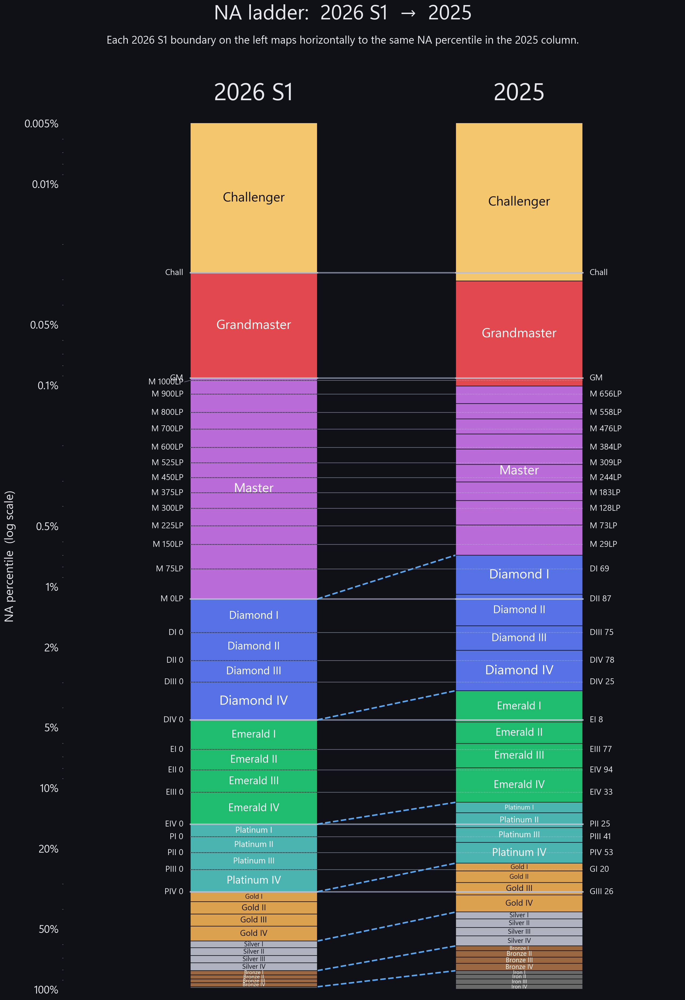
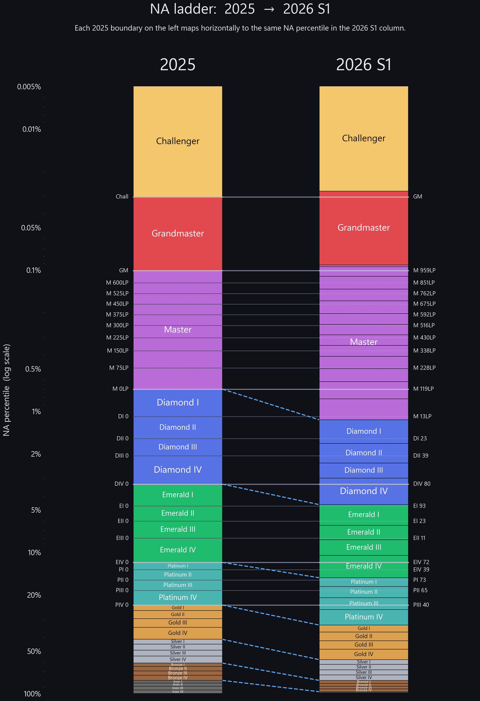

Riot inflated NA ranked between 2025 and 2026. Enter your current rank and we’ll tell you: if you are X now, you would have been Y in 2025.


Two-step quantile inversion:
Within-division LP is interpolated linearly (0–99). Real distributions skew toward low LP, so your true 2025 spot is often a half-division more inflated than the linear estimate.
Master+ output LP is reported in 2026’s LP scale — we don’t have LP-level data for 2025, so the model assumes the conditional LP distribution within Master+ is preserved year-over-year.
Historical distribution data: Beora’s Timewinder. Code: github.